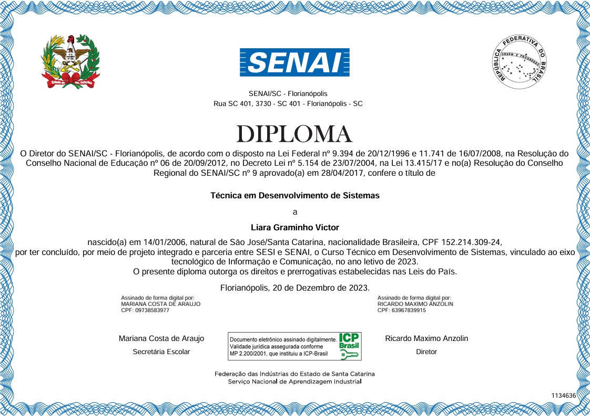
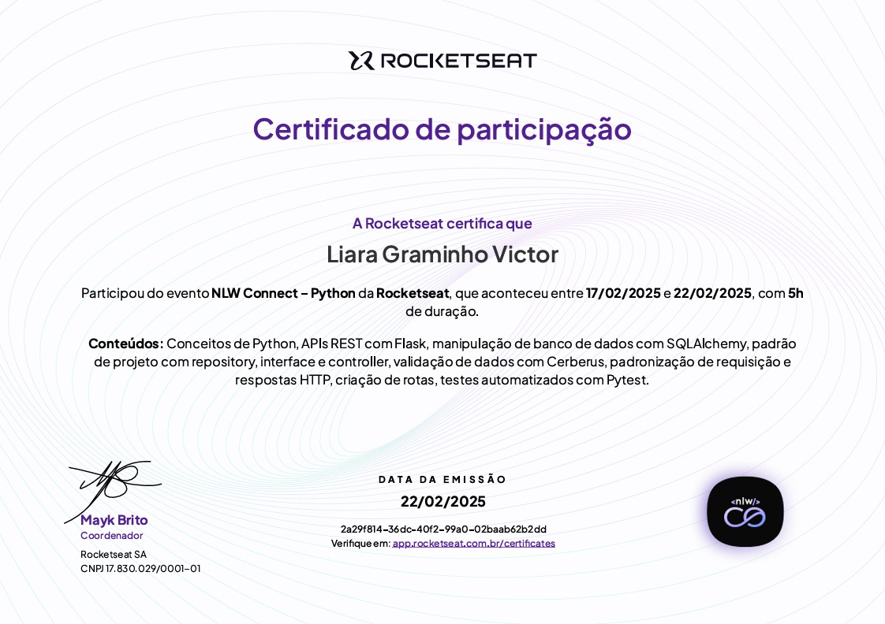

Formação
Veja minha trajetória acadêmica e conquistas na área.
2022
2° ano do Ensino Médio
Comecei a programar em HTML, CSS e Java Script, dei introdução a Lógica de Programação, Fundamento de Redes de Computadores, Fundamentos de Segurança da Informação, Fundamentos de Banco de Dados, Lógica Computacional e Fundamentos de Design.
2023
3° ano do Ensino Médio
Dei início no meu último ano do Ensino Médio dando contiunidade com Banco de Dados, iniciando meus estudos em Modelagem de Sistemas, Implantação e Manutenção de Sistemas, Desenvolvimento de Sistemas, Testes de Sistemas e Programação de Aplicativos, onde comecei a programar em Java, React, React Native e introdução a gerenciamento de projetos, como Scrum, Cascata, Ágil e entre outros. No final do ano, recebi um diploma de Técnico em Desenvolvimento de Sistemas.
2024
1° ano de faculdade
Um ano muito importante para mim, onde eu evoluí muito na questão dos estudos, entrei na faculdade de Ciências da Computação e aprendi vários conteúdos importantes, como: Arquitetura de Computadores, Pensamento Computacional, Matemática e Lógica, Desenvolvimento Web (HTML, JS, CSS e PHP), Introdução a Segurança da Informação, Geometria Analítica e Álgebra Linear, Fundamentos de Redes de Computadores e Introdução a Programação de Computadores. 2024 foi um ano de descobertas para mim, pois encontrei minha verdadeira paixão dentro da Tecnologia, a Computação Quântica. Também participei de alguns eventos por fora da faculdade e recebi algumas certificações:
2025
2° ano de faculdade
Sempre me aprimorando, decidi começar o ano participando do Programa de Verão do LNCC (Laboratório Nacional de Computação Científica), com os cursos: Jornada de Iniciação Científica, Escola Supercomputador Santos Dumont, Jornada de Ciência de Dados, Minicursos Temáticos. Dando contiunidade na faculdade, comecei meus estudos em Banco de Dados, Paradigmas de Linguagens de Programação em Python, Programacao de Software Basico em C, Modelagem de Sistemas em Uml e Linguagens Formais e Autômatos. Também concluí mais uma certificação, dessa vez em Python:
